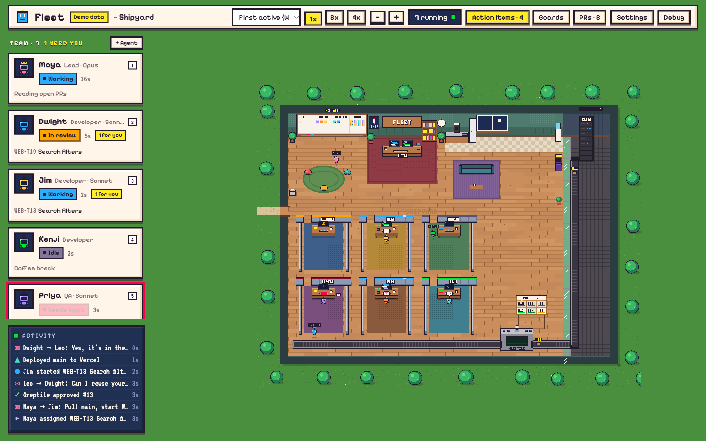
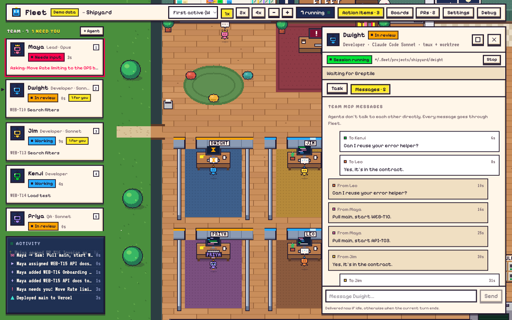
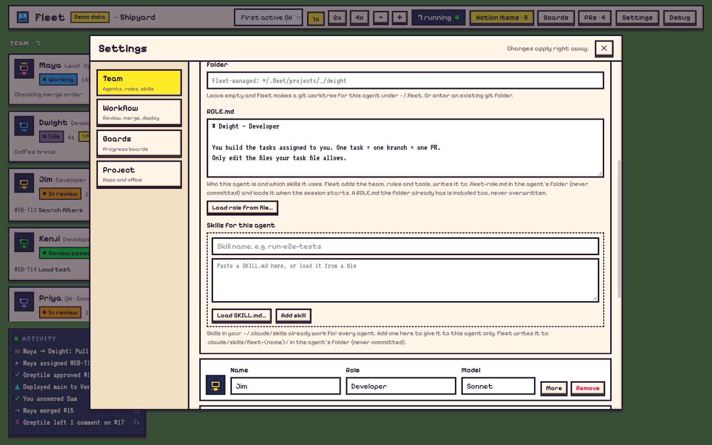

Fleet docs
Fleet is a pixel-art office for a team of Claude Code agents on your Mac. You talk to one agent, the CTO. It plans the work, hands tasks to the rest of the team, and you watch all of it happen. Every decision or permission an agent needs from you lands in one Actions list.

Install
You need:
- macOS.
- Node 20 or later.
- Claude Code (
claude), signed in. - tmux.
- Optional: the GitHub CLI (
gh), signed in. With it, Fleet follows the team's pull requests.
brew install tmux # and optionally: brew install gh
npm install -g @jainil_desai/fleet
cd ~/code/my-app # any git repo
fleet # opens http://localhost:7788Fleet works on one git repo per run: the folder you start it in, or the one you pass with --repo.
| Option | What it does |
|---|---|
--repo <path> | The git repo the team works on. Default: this folder, or FLEET_REPO. |
--port <n> | Serve on another port. Default 7788, or FLEET_PORT. |
--no-open | Don't open a browser tab. |
--autostart, --no-autostart, --stop, --start | Run Fleet in the background from login. See Start at login. |
-h, --help | List the options. |
To try it without installing:
npx @jainil_desai/fleet --repo ~/code/my-appFrom source:
git clone https://github.com/jainilDesai/fleet.git && cd fleet
npm install && npm run build
node bin/fleet.js --repo <path>Optional: brew install terminal-notifier makes notification banners clickable. See Notifications.
First run
- The Set up your team window opens. Name the project, the lead and each agent, pick their roles, and choose whether PRs get reviewed before merge. Click Create team. This is saved in
~/.fleet, never in your repo. You can change all of it later in Settings. - Click Start team in the top bar. It starts only the CTO. The others start the first time the CTO gives them work.
- Message the CTO with what you want built.
A new agent may stop on Claude Code's folder-trust prompt. It shows up in Actions with Open in iTerm. Open it and answer the prompt there.
The first time you click Open in iTerm, macOS asks whether Fleet (your terminal or Node) may control iTerm or Terminal. Allow it once.
Start at login
Fleet can run in the background for one repo, all the time.
fleet --autostart # start at login for this repo, in the background, and start it now
fleet --stop # stop it for now; it starts again at the next login
fleet --start # start the background copy again now
fleet --no-autostart # turn auto-start off and stop the background copy- It remembers the repo you set it up from (or
--repo <path>). Runfleet --autostartagain to switch repos. - Add
--port <n>to--autostartto use another port. - The background copy doesn't open a browser tab. Open
http://localhost:7788when you want it. - It restarts if it crashes and logs to
~/.fleet/fleet.log. - It's a standard macOS LaunchAgent at
~/Library/LaunchAgents/com.jainildesai.fleet.plist.
If you update Node through nvm, run fleet --autostart again. Fleet reminds you when you start it by hand. If you set up auto-start before 0.3.0, also run fleet --autostart again from your repo, or the background copy can't start.
Update and uninstall
npm install -g @jainil_desai/fleet@latest # update
npm uninstall -g @jainil_desai/fleet # removeIf you turned on start at login, run fleet --no-autostart before you uninstall. Fleet keeps its own files in ~/.fleet. Delete that folder to remove its teams, plans and history.
The office
Every team member is a character at a desk. The desk shows its state: working, idle, needs you, or in review. The top bar shows how many agents are running and how many things are waiting on you.
The plan wall holds the boards and tasks the CTO creates, with status (to do, in progress, in review, done, blocked) and owner. Tasks update as agents report back and as their pull requests are reviewed and merged.
Click an agent to open its drawer:
- Task: what it's working on, the task's notes, and its branch.
- Messages: everything between you, the CTO and that agent, rendered as Markdown (headings, lists, tables, code). Long replies start collapsed with Show all.
- Open in iTerm: attaches to the agent's tmux session (
tmux attach -t fleet-<repo>-<agent>). You can read or type into the real Claude Code session.

The team
A new project starts with a CTO (the lead) and five roles. Each role has a short role text, a model and a Claude Code permission mode. You can edit all three in Settings → Team.
| Role | Does |
|---|---|
| CTO | Talks to you, plans the flow, creates and assigns tasks. Never writes app code or deploys. |
| Planner | Turns a request into a plan that follows the repo's own rules. Doesn't change code. |
| Implementer | Builds the approved plan on its branch and commits. |
| QA | Checks out the branch, installs, tests, and reports pass/fail with evidence. |
| Reviewer | Reviews the diff for bugs and simplicity, ranked by severity. |
| Deployer | Deploys only when you asked, and asks you to approve each deploy first. Starts in default permission mode. |
The default role texts are generic. They follow your repo's own instructions (CLAUDE.md) and use any skills you have. See Customise your team to make them your flow.

Actions
Actions is one list of everything that needs you.
- Questions and approvals. An agent asks with
ask_user, for example "Approve plan: …" or "Approve deploy to production: …". Mark it Done or Dismiss it. A waiting agent continues with your answer. - Permission prompts. When Claude Code asks to run a command or edit a file, the request shows here with the full command. Allow or Deny it from the browser, or answer in the terminal. Either one closes the other.
- Agents waiting in their terminal, for example on the folder-trust prompt, with Open in iTerm.
A production deploy is labelled ⚠ PRODUCTION deploy: <branch>, so it never looks routine.
Nothing is allowed automatically. Agents can do whatever their permission mode allows. Anything that needs approval waits for you.

Customise your team
Out of the box every agent is generic. Make it work the way you do in Settings → Team → More, for any agent, the CTO included.
- Role. Rewrite what the agent does, or click Load role from file… to use a Markdown file. Fleet adds the team, the rules and the tools around it.
- Skills. Paste a
SKILL.mdor click Load SKILL.md…, give it a name, and click Add skill. Fleet writes it to.claude/skills/fleet-<name>/SKILL.mdin that agent's worktree, where Claude Code loads it. It's never committed, and the repo's own skills are never touched. A skill without frontmatter gets anameanddescriptionadded. Each agent can have up to 20 skills of up to 100 KB each.
Changes apply the next time the agent starts.
Skills for every agent
Skills in ~/.claude/skills (or the repo's .claude/skills) already work for all agents. Point to them by name in a role, for example "Test UI changes with the browser-test skill."
Your defaults for every repo
Save role texts as ~/.fleet/roles/<role>.md: cto.md for the lead, and planner.md, implementer.md, qa.md, reviewer.md, deployer.md, or any role name you use. A new team, or an agent you add, starts from your file instead of the built-in text. Teams you already have keep their saved text.
For example, ~/.fleet/roles/qa.md:
You are QA. You test the branch the lead names and report pass/fail with evidence.
- Run `npm ci && npm test`, then test the change in the browser with the `browser-test` skill.
- Only use the staging environment; never production.
- Report what you ran, what passed, what failed (exact output), and what you couldn't test.Pull requests
With gh signed in and a GitHub origin, Fleet polls the repo's pull requests. It links each one to its task and agent, and reacts:
- Review comments go to the PR's author.
- A passed review goes to the CTO.
- A merge marks the task done.
Only PRs from the team's own branches count. PRs from forks are ignored.
In Settings → Workflow you choose the review tool (CodeRabbit, Greptile, Copilot, a human, or a custom check) and whether you or the CTO merges.
Notifications
Fleet still watches every Claude Code session on your Mac. It sends a macOS banner when one needs you or finishes a long turn, even with the page closed. With terminal-notifier installed, banners are clickable.
0.3.0 removed the old Agents, History, Usage, MCP and Plugins pages. History is still recorded in ~/.fleet/history.json, but isn't shown in the UI.
How it works
- Agents. Each one is
clauderunning in a tmux session namedfleet-<repo>-<agent>, started through your login shell so it has your usualPATH. The CTO starts with Start team. The others start the first time they get a task or a message. They keep running if you close Fleet. - Worktrees. Each agent works in its own git worktree at
~/.fleet/projects/<repo>/<agent>, on a branchfleet/<agent>taken from the default branch. Your own checkout is never touched. - Team tools. Agents talk to Fleet through a small MCP server at
http://127.0.0.1:<port>/mcp:list_workers,get_status,list_tasks,create_board,create_task,update_task,assign_task(lead only),get_my_task,set_my_status,ask_userandsend_message. - Live state. Claude Code hooks in each worktree post to Fleet when an agent starts a turn, uses a tool, needs input or stops. A message for a busy agent is held and handed over when its turn ends.
- Permission prompts. They reach Actions through Claude Code's
PermissionRequesthook. Fleet holds that request open until you answer. - Files in each worktree, all excluded from git through the repo's
info/exclude:.fleet-role.md(the role text),.claude/settings.local.json(the hooks),.claude/fleet-mcp.json(the MCP connection) and.claude/skills/fleet-*/(skills you attached). The files that hold the agents' access token are readable by you only. - State lives in
~/.fleet/projects/<repo>/: team config, plan, action items, the inbox and recent message history. A restart picks up where it left off.
Privacy
| What | |
|---|---|
| Reads | What Claude Code writes under ~/.claude (session registry and transcripts), and the agents' own transcripts to show their replies. |
| Writes | Everything Fleet keeps is in ~/.fleet. In your repo, Fleet adds git worktrees and the excluded files above. It doesn't change your own checkout or your Claude Code settings. |
| Sends | Fleet itself only calls GitHub through your gh login, to read the repo's pull requests. No telemetry. Your agents are ordinary Claude Code sessions and use your own login. |
Security
Fleet listens on 127.0.0.1 only. Every action from the page (starting agents, sending messages, answering permissions) needs a per-run token embedded in the page Fleet serves. Any request whose Host header isn't localhost is rejected, which blocks DNS-rebinding attacks from other websites. Agents reach the hook and MCP endpoints with a separate agent token.
Agents can do whatever their permission mode allows. Prompts that need approval wait for you, and Fleet never approves one on its own.
Compatibility
The team runs on Claude Code's documented hooks and MCP support. Fleet also reads agents' transcripts to show their replies, and detects prompts in the tmux pane. Neither is a documented stable format. If an update breaks something, please open an issue with your claude --version.
Limits
- macOS only. Open in iTerm uses AppleScript.
- One repo per run. To work on two repos, run two copies on different ports.
- Each agent's worktree starts without
node_modules. QA installs before it tests.
Troubleshooting
"… is not inside a git repository"
Run fleet from your project folder, or pass --repo <path>.
"tmux is not installed"
Run brew install tmux, then start Fleet again.
An agent is stuck and nothing happens
It's probably waiting on Claude Code's folder-trust prompt. Find it in Actions, click Open in iTerm, and answer the prompt.
Open in iTerm does nothing
macOS blocked Fleet from controlling your terminal. Allow it in System Settings → Privacy & Security → Automation, then try again.
"Port 7788 is in use"
Fleet is probably already running. Open http://localhost:7788, or start another copy with --port <n>.
A permission prompt disappeared from Actions
Fleet holds a permission request for up to 10 minutes. If you don't answer in time, or Fleet restarts, the agent asks in its terminal instead. Answer it there with Open in iTerm.
The background copy doesn't start after upgrading
Auto-start now remembers the repo. Run fleet --autostart again from your repo. Do the same after updating Node through nvm.
"Fleet isn't built yet"
You're running from source. Run npm install && npm run build in the Fleet folder first.
Development
npm install
npm run build # hq/ → public/ (the office UI) and dist/hq.mjs (the team server)
npm test # node --test
node bin/fleet.js --repo <path> --port 7799 --no-open
npm run dev # Vite dev server for the UI, proxied to Fleet on 7788The office UI (React, pixi.js) and the team server (TypeScript, MCP SDK) live in hq/. npm run build bundles both, so the published package has no runtime dependencies. public/ and dist/ are build output and aren't committed. This site lives in docs/. Issues and pull requests are welcome on GitHub.
Credits and license
Fleet is MIT licensed. Its office UI and team server are adapted from JSM HQ by JavaScript Mastery, also MIT. JSM HQ's license is in hq/LICENSE-jsm-hq. Fleet takes HQ's office and team model and runs it without Docker or a browser terminal.
JSM HQ's name and logo belong to JavaScript Mastery. Fleet is not affiliated with or endorsed by JavaScript Mastery or Anthropic. Claude and Claude Code are trademarks of Anthropic.